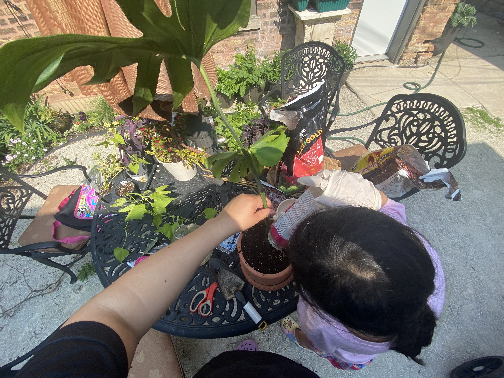

Karla Rosales
Every Family, Every Voice, Better Peirce.
A little about me and my motivation
I've been part of the Peirce community since my child started kindergarten. They're now in 4th grade. My motivation for running for the LSC is rooted in our personal experience navigating school disruptions and the ongoing changes families often face. Through these challenges, I realized that many of us , independent of background, whether new or lifelong Chicagoans , often feel unsure of how to ask questions, other than to find ways to contribute or get more involved.
I'm bilingual. I understand what it means to raise kids across languages and cultures, and I have the analytical background to work through complex challenges in a structured way. I'm here to listen, to understand how decisions get made at Peirce, and to contribute where it matters most.
I would be honored to serve on the Local School Council, to bring both my lived experience and my professional perspective to help make Peirce more navigable and supportive for every family. I'd love your support.

How I think about equity
For me, equity is like gardening. All plants need earth, water, and sun to survive, but they each have different needs to truly thrive , different soil, different amounts of light, different nutrients. In a school community, it starts with a practical question: who isn't getting what they need, and what's standing in the way? I think of it as paying attention to those gaps and working to close them, the way you tend a garden, consistently and with care.
Cast your vote.
In person at Peirce Elementary School
Each eligible voter is entitled to cast one (1) ballot and one (1) vote per candidate for up to, but no more than, any five (5) candidates in the election for parent and community representative seats.